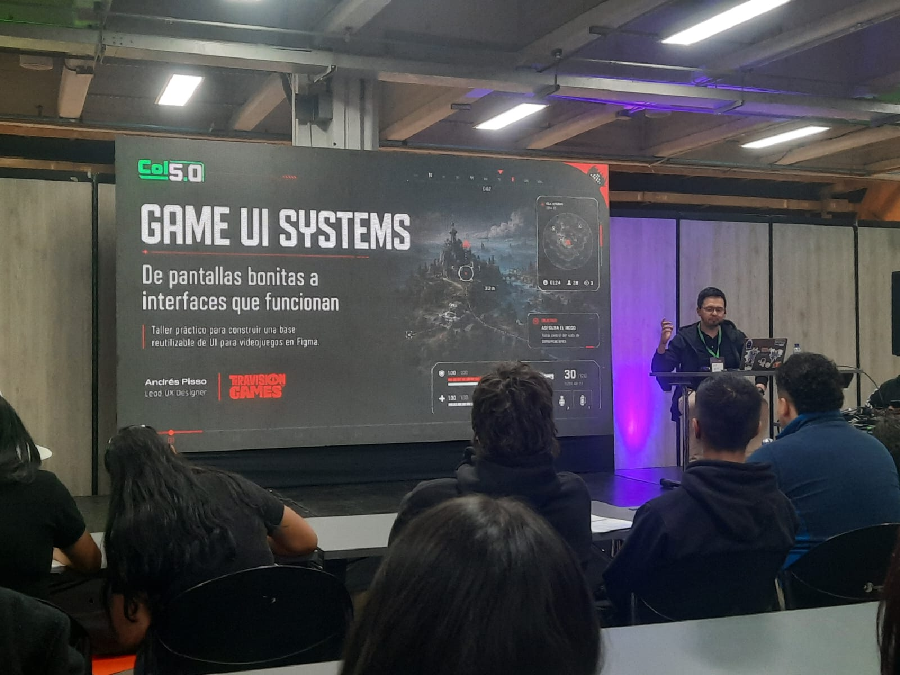
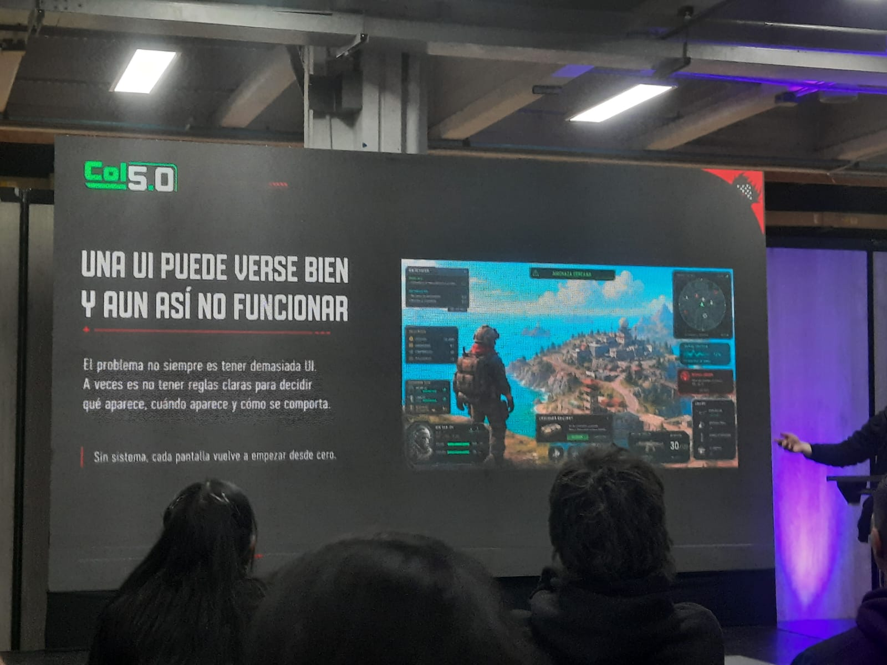
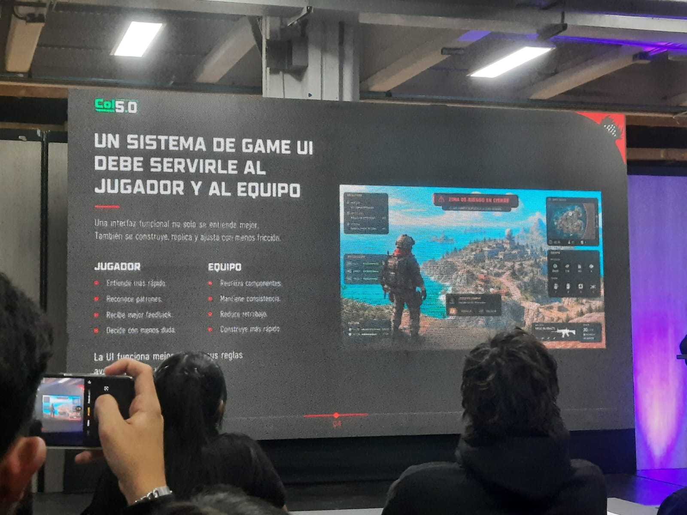
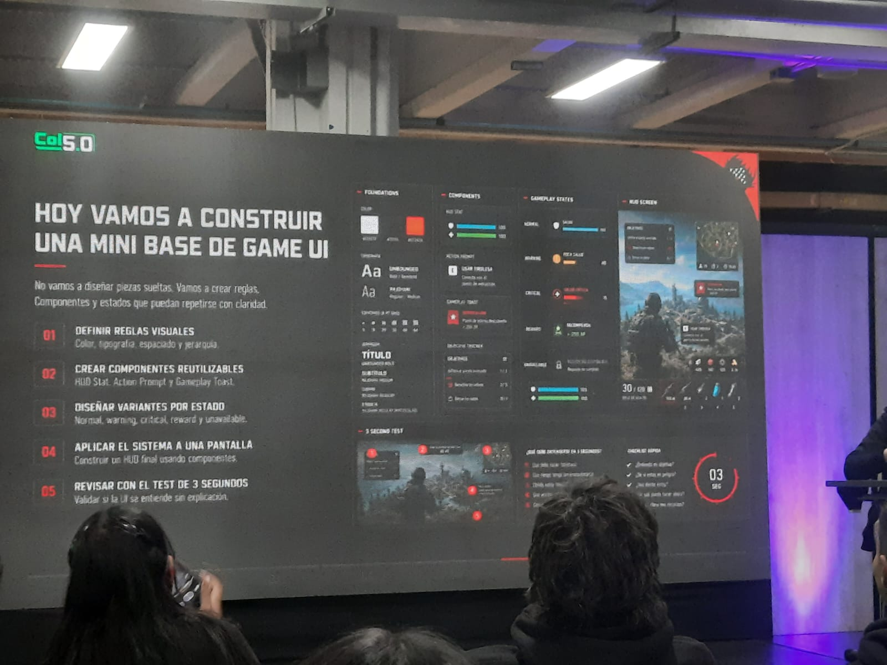
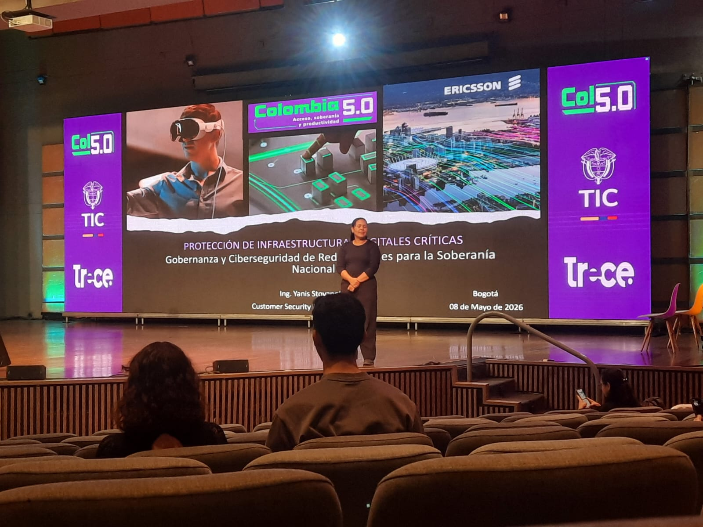
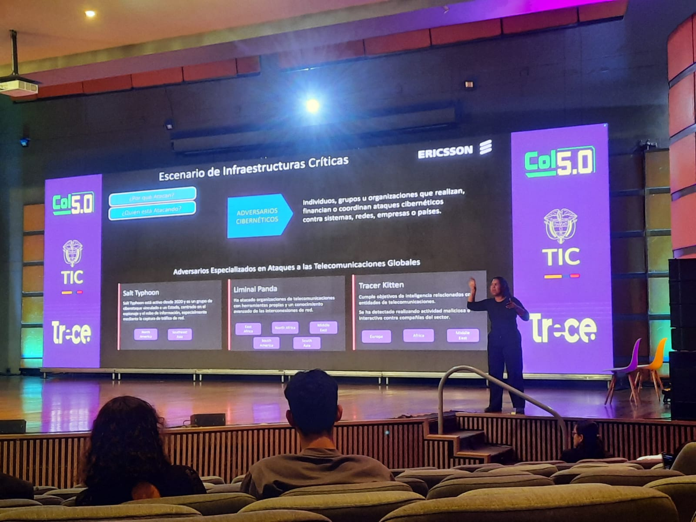
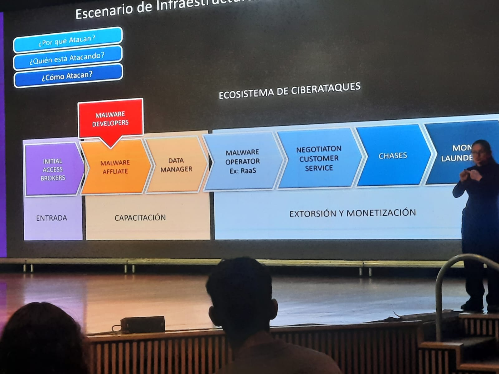

Resumen
Andrés Felipe Pisso Tobar, Lead UX Designer de Teravision Games, dictó un taller práctico titulado "Game UI Systems: De pantallas bonitas a interfaces que funcionan" en el marco del evento Colombia 5.0. Su propuesta central fue contundente: diseñar UI para videojuegos no consiste en crear piezas aisladas visualmente atractivas, sino en construir un sistema coherente de reglas, componentes y estados que pueda repetirse con claridad a lo largo de todo el juego.
El conferencista abrió con una premisa clave: "Una UI puede verse bien y aun así no funcionar." El problema, explicó, no siempre es tener demasiada interfaz en pantalla; a veces es simplemente no tener reglas claras para decidir qué aparece, cuándo aparece y cómo se comporta. Sin un sistema definido, cada nueva pantalla del juego obliga al equipo a empezar desde cero, generando inconsistencia visual y fricción tanto para el jugador como para el equipo de desarrollo.
El taller fue completamente práctico. Los asistentes construyeron en Figma una mini base de Game UI siguiendo cinco pasos metodológicos:
- 01 Definir reglas visuales — color, tipografía, espaciado y jerarquía.
- 02 Crear componentes reutilizables — HUD Stat, Action Prompt y Gameplay Toast.
- 03 Diseñar variantes por estado — Normal, Warning, Critical, Reward y Unavailable.
- 04 Aplicar el sistema a una pantalla — construir un HUD final usando los componentes.
- 05 Revisar con el Test de 3 Segundos — validar si la UI se entiende sin explicación.
La sesión cerró con una reflexión poderosa: la diferencia entre un diseñador que hace pantallas bonitas y uno que construye sistemas es la disciplina de crear reglas claras antes de crear piezas. En un estudio de videojuegos, un sistema bien construido es la diferencia entre iterar rápido y bloquearse en inconsistencias.
Fotografías del Taller — Colombia 5.0
 Andrés Felipe Pisso Tobar — Lead UX Designer, Teravision Games
Andrés Felipe Pisso Tobar — Lead UX Designer, Teravision Games

Presentación: Game UI Systems — De pantallas bonitas a interfaces que funcionan
"Una UI puede verse bien y aun así no funcionar"
El sistema sirve al jugador y al equipo de desarrollo
Construyendo la mini base de Game UI — 5 pasos metodológicos Bases del sistema: color, tipografía, espaciado y jerarquía
Bases del sistema: color, tipografía, espaciado y jerarquía
 Sistema en Figma: colores, tipografía Rajdhani, componentes y notificaciones
Sistema en Figma: colores, tipografía Rajdhani, componentes y notificaciones
Resumen
La ingeniera Yanis Stovanel, Customer Security Manager de Ericsson, presentó una conferencia de alto impacto en Colombia 5.0 sobre la protección de infraestructuras digitales críticas. Su presentación se centró en el llamado "Escenario de Infraestructuras Críticas": la creciente ola de ciberataques dirigidos a sistemas esenciales como redes de telecomunicaciones, redes eléctricas, sistemas de agua potable y plataformas financieras que sostienen el funcionamiento de naciones enteras.
Estructuró la conferencia alrededor de cinco preguntas fundamentales: ¿Por qué atacan? ¿Quién está atacando? ¿Cómo atacan? ¿Cuáles son las consecuencias? ¿Cómo seremos atacados en el futuro? Las vulnerabilidades fueron definidas como fallos o debilidades en sistemas, software, redes o procesos que pueden ser explotados por atacantes para comprometer la seguridad.
Los datos presentados fueron impactantes. Según el Catálogo KEV (Known Exploited Vulnerabilities) de CISA, se han documentado aproximadamente 327.000 vulnerabilidades, de las cuales ~1.500 están catalogadas como explotadas activamente. De estas, entre el 8 y 10% afectan tecnologías industriales, y la explotación activa creció un +20% en 2025. Además, aproximadamente el 40% son de Alto Impacto según la escala CVSS.
La conferencia identificó tres actores de amenaza especializados en ataques a telecomunicaciones globales:
- 01 Salt Typhoon — Activo desde 2020, grupo vinculado a un Estado, enfocado en espionaje y robo de información mediante captura de tráfico de red. Opera en América del Sur y Sudeste Asiático.
- 02 Liminal Panda — Ha atacado organizaciones de telecomunicaciones con herramientas propias y conocimiento avanzado de interconexiones de red. Activo en África y América del Norte.
- 03 Tracer Kitten — Cumple objetivos de inteligencia contra entidades de telecomunicaciones. Detectado en Europa, África y Medio Oriente.
La conferencia también abordó el Ecosistema de Ciberataques: una cadena organizada que va desde los Initial Access Brokers y Malware Affiliates, pasando por los Malware Operators (como los modelos RaaS), hasta la Extorsión y Monetización. Además, presentó el surgimiento de la IA Agéntica como nueva amenaza: sistemas que actúan de forma autónoma, toman decisiones y ejecutan tareas complejas, habilitando ataques mediante Autonomous Hacking Agents, Polymorphic Malware y Automated Vulnerability Exploitation.
Stovanel concluyó con un llamado a cambio de paradigma: la ciberseguridad debe dejar de ser una preocupación técnica reactiva para convertirse en una estrategia proactiva de gobernanza al más alto nivel de gobierno y empresa. Proteger las redes críticas no es solo un desafío técnico — es un asunto de soberanía nacional.
Fotografías de la Conferencia — Colombia 5.0

Ing. Yanis Stovanel — Ericsson · Protección de Infraestructuras Digitales Críticas · Bogotá, 08 de Mayo de 2026
Adversarios cibernéticos especializados en ataques a telecomunicaciones globales ~327 mil vulnerabilidades documentadas · 40% Alto Impacto · +20% explotación activa en 2025
~327 mil vulnerabilidades documentadas · 40% Alto Impacto · +20% explotación activa en 2025

IA Agéntica — Autonomous Hacking Agents, Polymorphic Malware y Explotación Automatizada Panorama de Amenazas: Brokers IAB, Herramientas LOTL, Infiltración "low and slow", Superficie 5G
Panorama de Amenazas: Brokers IAB, Herramientas LOTL, Infiltración "low and slow", Superficie 5G
 Ecosistema de Ciberataques: Entrada → Capacitación → Extorsión y Monetización (RaaS)
Ecosistema de Ciberataques: Entrada → Capacitación → Extorsión y Monetización (RaaS)
Áreas del Conocimiento
Los ejes temáticos que definieron la agenda tecnológica de Colombia 5.0.
Inteligencia Artificial
Conjunto de técnicas que permiten a las máquinas aprender, razonar y tomar decisiones. En el contexto empresarial, la IA automatiza procesos complejos, analiza grandes volúmenes de datos y personaliza la experiencia del usuario.
Transformación Digital
Proceso de integración de tecnologías digitales en todas las áreas de una empresa, cambiando fundamentalmente cómo opera y ofrece valor a sus clientes. Implica cultura, estrategia y cambio organizacional.
Big Data
Manejo y análisis de conjuntos de datos de enorme volumen, velocidad y variedad que superan las capacidades de las herramientas tradicionales. Su correcta explotación genera inteligencia de negocio valiosa y decisiones basadas en evidencia.
Computación en la Nube
Provisión de servicios de computación a través de internet bajo demanda. Permite a las organizaciones escalar recursos de forma ágil, pagar solo por lo que usan y reducir inversión en infraestructura física.
Ciberseguridad
Práctica de proteger sistemas, redes y programas de ataques digitales. En un mundo hiperconectado, es un pilar estratégico que protege activos críticos, la reputación corporativa y la soberanía nacional.
Automatización
Uso de tecnología para ejecutar tareas con mínima intervención humana. La automatización robótica de procesos (RPA) libera al talento humano de tareas repetitivas para enfocarse en actividades de mayor valor cognitivo.
Infraestructura Crítica
Sistemas esenciales como telecomunicaciones, energía, agua y finanzas cuya interrupción tendría grave impacto nacional. Su protección requiere gobernanza avanzada de ciberseguridad y cooperación internacional.
Diseño de Game UI
Disciplina que combina el diseño de experiencia de usuario con el desarrollo de videojuegos. Un buen sistema de Game UI debe servir tanto al jugador, facilitando su comprensión, como al equipo, permitiendo construir con rapidez y consistencia.
Momentos del Evento
Fotografías tomadas durante ambas conferencias en Colombia 5.0, Bogotá 2026.
Conferencia 1 — Game UI Systems · Andrés Pisso Tobar · Teravision Games
Conferencia 2 — Infraestructura Crítica · Ing. Yanis Stovanel · Ericsson
Glosario
30 términos técnicos de Colombia 5.0 — 15 por conferencia, con traducción al inglés y definición.
| # | Término en Español | English Term | Definición |
|---|---|---|---|
| 1 | Sistema de UI para Juegos | Game UI System | Conjunto estructurado de reglas visuales, componentes reutilizables y estados que definen la interfaz de un videojuego de forma coherente en todas las pantallas. |
| 2 | Pantalla de Información en Juego | HUD (Heads-Up Display) | Capa de elementos visuales en pantalla (salud, munición, minimapa) que le proporciona al jugador información del juego en tiempo real. |
| 3 | Sistema de Diseño | Design System | Colección de componentes reutilizables con estándares claros que se ensamblan para construir productos digitales con consistencia visual. |
| 4 | Componente | Component | Bloque de construcción de UI reutilizable y autónomo (botón, barra, notificación) que mantiene comportamiento consistente en todas las pantallas. |
| 5 | Notificación de Juego | Gameplay Toast | Notificación contextual en el juego que aparece temporalmente para comunicar eventos como recompensas, alertas o subidas de nivel. |
| 6 | Indicador de Acción | Action Prompt | Elemento de UI que indica al jugador qué acción puede realizar en ese momento, por ejemplo "Presiona X para interactuar". |
| 7 | Variante de Estado | State Variant | Versión de un componente que refleja una condición específica: Normal, Advertencia, Crítico, Recompensa o No Disponible. |
| 8 | Test de 3 Segundos | 3-Second Test | Método de usabilidad que valida si una pantalla de UI se comprende en 3 segundos sin necesidad de explicación adicional. |
| 9 | Fundamentos del Sistema | Foundations | Reglas visuales base de un sistema de diseño: paleta de colores, tipografía, escala de espaciado y jerarquía de textos. |
| 10 | Jerarquía Visual | Visual Hierarchy | Organización de los elementos de UI por importancia, guiando la vista del jugador hacia la información más crítica en primer lugar. |
| 11 | Diseño de Experiencia de Usuario | UX Design | Práctica de diseñar productos digitales con foco en cómo los usuarios interactúan y se sienten al usar la interfaz. |
| 12 | Prototipo | Prototype | Modelo interactivo de un diseño usado para probar la funcionalidad y el flujo del usuario antes de iniciar el desarrollo. |
| 13 | Retroalimentación Visual | Visual Feedback | Respuesta visual o sonora que el juego proporciona al jugador en reacción a sus acciones, confirmando los resultados obtenidos. |
| 14 | Figma | Figma | Herramienta de diseño basada en la nube para crear interfaces, prototipos y sistemas de diseño colaborativos en tiempo real. |
| 15 | Escala de Espaciado | Spacing Scale | Conjunto predefinido de valores de espaciado — ej. 4, 16, 24, 32, 48, 64 px — usado de forma consistente en todos los componentes de UI. |
| # | Término en Español | English Term | Definición |
|---|---|---|---|
| 16 | Infraestructura Crítica | Critical Infrastructure | Sistemas esenciales — telecomunicaciones, energía, agua, finanzas — cuya interrupción tendría grave impacto en la seguridad nacional y la vida cotidiana. |
| 17 | Vulnerabilidad | Vulnerability | Fallo o debilidad en un sistema, software, red o proceso que puede ser explotado por atacantes para comprometer la seguridad. |
| 18 | Sistema de Puntuación de Vulnerabilidades | CVSS | Common Vulnerability Scoring System — marco estándar para calificar la gravedad de vulnerabilidades de seguridad en software, de 0 a 10. |
| 19 | Catálogo de Vulnerabilidades Explotadas | KEV Catalog | Catálogo de Vulnerabilidades Conocidas Explotadas mantenido por CISA, que lista vulnerabilidades activamente usadas por actores de amenaza en el mundo real. |
| 20 | Adversario Cibernético | Cyber Adversary | Individuo, grupo u organización que realiza, financia o coordina ciberataques contra sistemas, redes, empresas o países. |
| 21 | Actor de Amenaza | Threat Actor | Cualquier entidad — individuo, grupo o Estado — responsable de un incidente o ciberataque que impacta o pretende impactar la seguridad. |
| 22 | IA Agéntica | Agentic AI | Sistema de inteligencia artificial que actúa de forma autónoma como agente, tomando decisiones, planificando acciones y ejecutando tareas complejas para alcanzar objetivos. |
| 23 | Agentes de Hackeo Autónomo | Autonomous Hacking Agents | Sistemas de IA capaces de llevar a cabo ataques cibernéticos de forma autónoma, sin intervención humana constante, aumentando la escala y velocidad de las amenazas. |
| 24 | Malware Polimórfico | Polymorphic Malware | Software malicioso que cambia su código automáticamente para evadir la detección por sistemas antivirus y herramientas de seguridad tradicionales. |
| 25 | Brokers de Acceso Inicial | Initial Access Brokers (IAB) | Actores criminales que se especializan en obtener acceso no autorizado a sistemas y luego venden ese acceso a otros atacantes. |
| 26 | Ransomware como Servicio | RaaS (Ransomware as a Service) | Modelo de negocio criminal donde los desarrolladores de ransomware alquilan su software malicioso a afiliados a cambio de un porcentaje del rescate obtenido. |
| 27 | Gobernanza de Redes | Network Governance | Marco de políticas, normas y prácticas que guían cómo se gestionan, aseguran y regulan las redes de comunicación a nivel nacional. |
| 28 | Soberanía Nacional Digital | National Digital Sovereignty | Capacidad de un país para controlar y defender de forma independiente su infraestructura digital crítica y los flujos de datos de sus ciudadanos. |
| 29 | Inteligencia de Amenazas | Threat Intelligence | Conocimiento basado en evidencias sobre amenazas existentes o emergentes, utilizado para informar las decisiones de defensa en ciberseguridad. |
| 30 | Gobernanza de Ciberseguridad | Cybersecurity Governance | Marco proactivo y estratégico que integra la toma de decisiones en ciberseguridad al más alto nivel de gobierno y liderazgo empresarial. |
Conclusión y Opinión
Una mirada crítica sobre tecnología, ética y responsabilidad profesional.
Lo Aprendido en Colombia 5.0
Participar en el evento Colombia 5.0 fue una experiencia formativa de alto impacto. Comprendí que construir tecnología no se trata únicamente de dominar herramientas — se trata de entender el problema a resolver y diseñar soluciones coherentes, usables y sostenibles. El taller de Game UI Systems demostró que sin reglas claras, incluso la interfaz más bonita falla. La conferencia de Infraestructura Crítica demostró que sin gobernanza, incluso la red más robusta puede ser comprometida.
Importancia de la Tecnología para las Empresas
Las empresas colombianas que adoptan tecnología de manera estratégica no solo optimizan sus operaciones, sino que construyen ecosistemas más resilientes e inclusivos. La nube, el Big Data y la automatización no son lujos corporativos; son herramientas que permiten crecer de forma sostenible y competir a escala global. Colombia 5.0 dejó claro que el país tiene el talento humano y la voluntad para liderar esta transformación.
Beneficios de la Inteligencia Artificial
La Inteligencia Artificial no es una amenaza para el empleo, sino un catalizador de transformación que requiere nuevas competencias humanas: pensamiento crítico, creatividad y supervisión ética. Sin embargo, como vimos en la conferencia de Ericsson, la IA también puede ser weaponizada: la IA Agéntica está habilitando una nueva generación de ciberataques autónomos que representan un desafío sin precedentes para la seguridad global.
Uso Responsable de los Datos
El uso responsable de los datos implica respetar la privacidad del usuario, obtener consentimiento informado y cumplir normativas como el GDPR y la Ley 1581 de Colombia. Los datos son el activo más valioso de la economía digital, pero su recolección y uso deben guiarse por principios éticos que protejan los derechos fundamentales de las personas.
Ética en la Tecnología Empresarial
La ética debe ser el eje transversal de toda implementación tecnológica. Los algoritmos de IA pueden perpetuar sesgos sociales si no son diseñados con diversidad, transparencia y rendición de cuentas. Ningún avance técnico justifica vulnerar derechos fundamentales. Las empresas tienen la responsabilidad de implementar tecnología que beneficie a toda la sociedad.
Impacto Social de la Automatización
La automatización genera eficiencia, pero también desplaza ocupaciones tradicionales. La responsabilidad social exige que los profesionales tecnológicos aboguen por programas de reconversión laboral, diseñen sistemas accesibles e inclusivos y participen activamente en políticas públicas de equidad digital. La tecnología debe reducir brechas, no ampliarlas.
Responsabilidad Profesional en el Desarrollo de Software
Como futuros desarrolladores, somos coautores del mundo digital que habitamos. Escribir código limpio, documentado y seguro no es solo una práctica técnica; es un compromiso ético. Debemos evaluar el impacto de nuestras soluciones, diseñar con privacidad por diseño y asumir responsabilidad cuando nuestros sistemas fallan o generan daño. Colombia 5.0 nos recordó que la tecnología más poderosa es la que verdaderamente sirve a las personas.